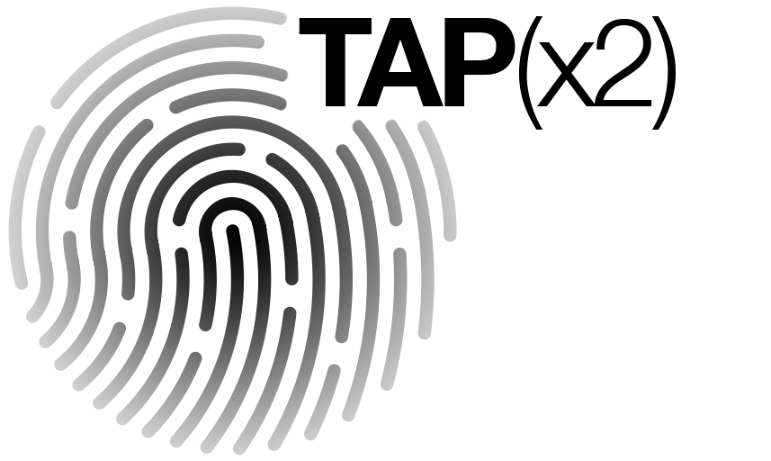

A Site Response
Campus to Country sets the framework, and establishes a set of key settings for engagement and interactions, where landscape is prioritised. Building mass is consolidated and carved to privilege Country, resulting in flexible workspaces visually linked to Country. Tracks work with the escarpment to connect to adjacent sites.
The Health and Wellness Precinct is envisaged as an extensive new public realm enabling connectivity within and around the new building drawing upon the track from the Campus to Country strategy. Country is further prioritised, with the existing native trees preserved and added to, and the building volume consolidated along Musk Avenue. This key move delivers a setting that helps organise the whole precinct, and clear opportunities to link to adjacent sites.
The Escarpment incorporating existing native trees and steep topography is the cohesive landscaped public open space enjoyed by all, and connecting territories to the north, south, east and west. This landscape would retain and develop endemic native species with a view to extending the native ecology of the precinct and providing the primary connection to nature.
An enigmatic Outdoor Room links the Escarpment to Musk Avenue and is both protected and open. It provides a southern address into the precinct off Musk Avenue, activated by the Clinics at Level 1 and Level 2, the Simulation Space at Level 2, and the central circulation void within the overhead building.
Double-click or double-tap to begin animation.
